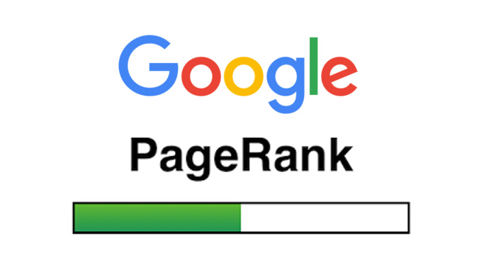

Qu'est ce que c'est ?
Le PageRank ou PR est l'algorithme d'analyse des liens concourant au système de classement des pages Web utilisé par le moteur de recherche Google. Il mesure quantitativement la popularité d'une page web. Le PageRank n'est qu'un indicateur parmi d'autres dans l'algorithme qui permet de classer les pages du Web dans les résultats de recherche de Google. Ce système a été inventé par Larry Page, cofondateur de Google. Ce mot est une marque déposée. Le théorème de point fixe est le concept mathématique qui a rendu possible le calcul du PageRank. Le PageRank d'une page a tendance à être d'autant plus élevé que la somme des PagesRanks des pages qui pointent vers elle est élevée. Le principe de base est d'attribuer à chaque page une valeur (ou score) proportionnelle au nombre de fois que passerait par cette page un utilisateur parcourant le graphe du Web en cliquant aléatoirement, sur un des liens apparaissant sur chaque page. Ainsi, une page a un PageRank d'autant plus important qu'est grande la somme des PageRanks des pages qui pointent vers elle (elle comprise, s'il y a des liens internes). Le PageRank est une mesure de centralité sur le réseau du web. En supposant que l'utilisateur choisisse chaque lien indépendamment des pages précédemment visitées (le réalisme d'une telle hypothèse pouvant être discuté). Des algorithmes d'approximation sont utilisés pour calculer le Page Rank. De nombreuses corrections et améliorations ont été apportées à cet algorithme, certaines étant décrites dans le brevet déposé le 17 avril 2014, d'autres ne restant connues que de Google. En particulier, il est important de garantir que des modifications trop locales du graphe du Web n'entraînent pas d'augmentation disproportionnée du PageRank de certaines pages, ceci afin d'éviter que des utilisateurs (par exemple des sites commerciaux) ne « boostent » artificiellement leur PageRank. Par exemple, dans l'algorithme de base décrit ci-dessus, ajouter de nombreux liens internes sur une page Web (ce qui est très simple à faire pour un particulier) permet d'augmenter son PageRank (cette stratégie ne marche pas avec le PageRank actuel de Google). Jusqu'en 2016, les internautes pouvaient obtenir une approximation du classement de chaque page en consultant la zone PageRank de la barre d'outils Google, qui indiquait sa valeur sur une échelle de 0 à 10 (Échelle logarithmique). Jusqu'à cette date, il existait aussi de nombreux outils pour l'obtenir sans afficher la toolbar, même s'ils se basaient eux aussi sur la valeur renvoyée par la barre d'outils de Google. Depuis 2016, Google ne fournit plus aucune valeur de PageRank, il est donc impossible de le connaître désormais. Ainsi, certaines sociétés privées telles que Moz et Majestic SEO tentent de s'en approcher par le biais de leurs indicateurs (citation flow, trust flow, Domain authority, page authority) afin d'avoir une idée du PageRank Réel et permettent aux webmasters de comparer les différents sites

Où le trouve t'on ?
On le trouve dans de tous les classements des sites internets mais il est important de noter que le PageRank n'est plus un facteur principal dans le classement des pages de Google, car l'algorithme de recherche de Google a évolué pour inclure de nombreux autres critères de pertinence et de qualité. Donc, connaître le PageRank d'une page en 2023 n'a plus la même importance qu'auparavant. Google se concentre désormais sur d'autres facteurs pour classer les résultats de recherche, tels que la qualité du contenu, la pertinence des mots-clés, l'expérience utilisateur, etc.